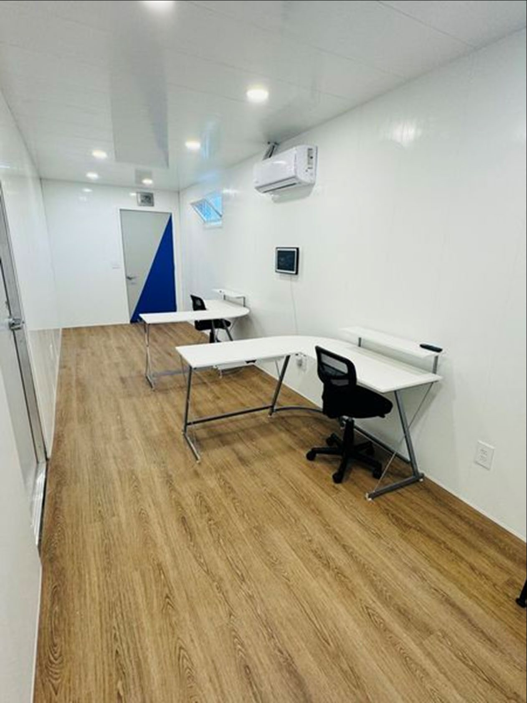
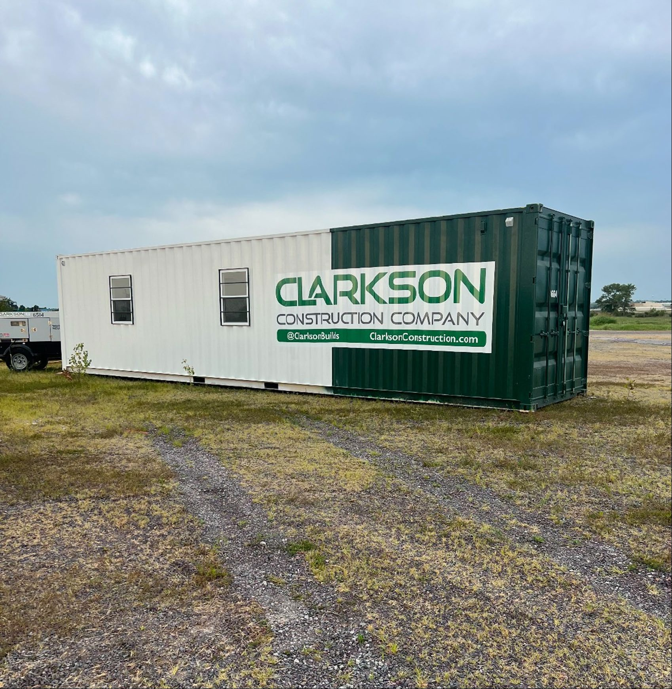
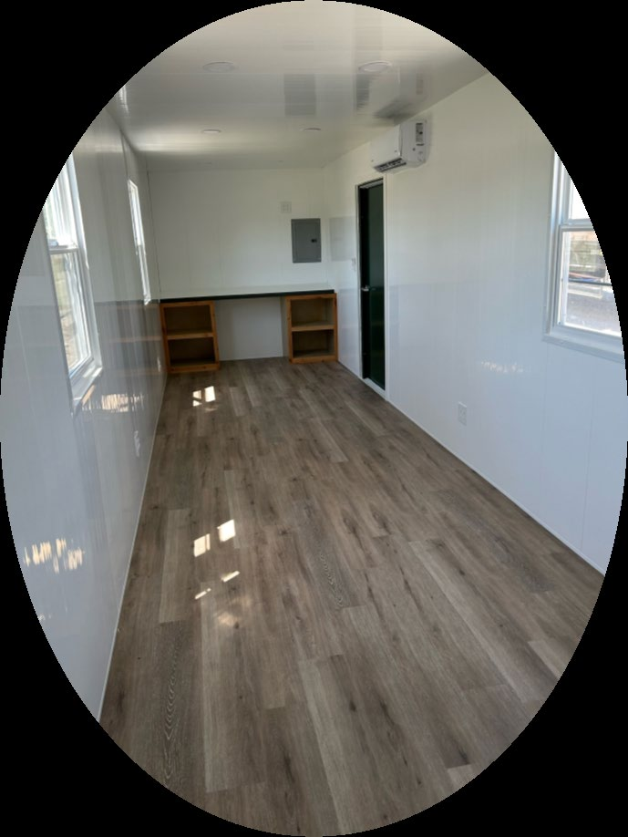
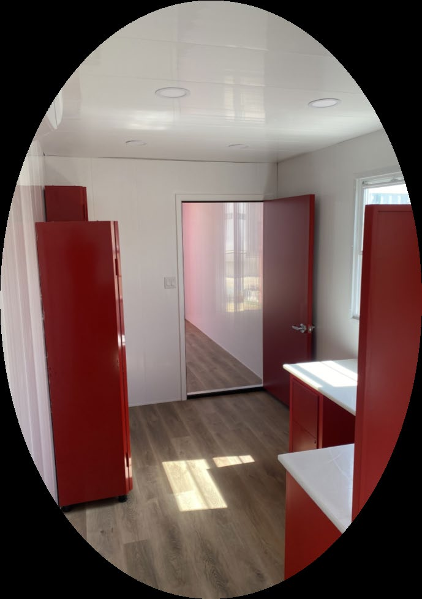
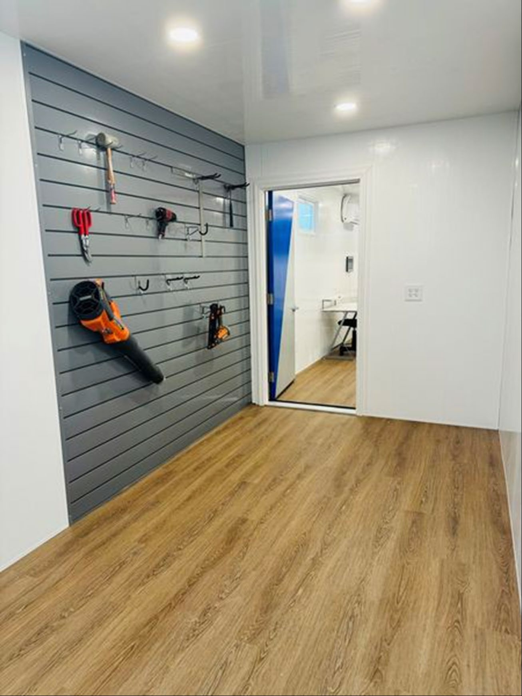

Custom portable container offices for construction sites, field operations and commercial applications across Kansas, Missouri and Oklahoma, designed around durability, security, climate control and practical workspace.

Additional security features include WAR-LOK heavy-duty puck locks, rebar windows, motion lighting and cameras, plus built-in storage for tools and equipment.
WAR-LOK puck-lock options for stronger site security.
Motion lighting and camera options for additional protection.
Built-in storage helps keep field tools and equipment organized.




Yes. Insulation and heat/cool mini-split configurations are available for year-round workspace.
Yes. Layouts can combine workspace with secure tool and equipment storage in one container.
620 Fabrication is based in Pittsburg, Kansas and supports office-container projects across Kansas, Missouri and Oklahoma.
620 Fabrication supports construction, commercial and field operations with ground-level office containers, mobile office containers and office/storage combinations.
Call with your project location, workspace needs and preferred office/storage configuration.